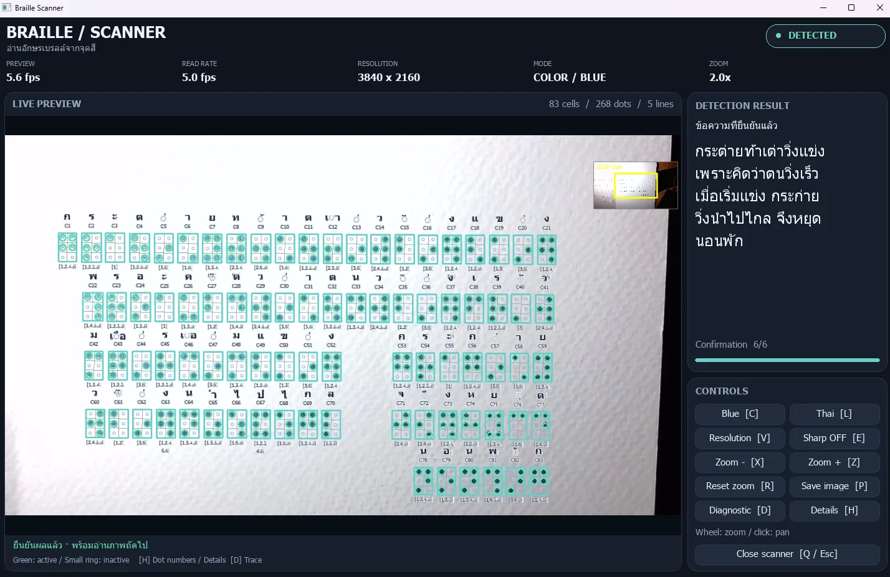

Braille-to-Speech Scanner
AI · Software Dev · Testing
ต้นแบบระบบอ่านอักษรเบรลล์ไทย/อังกฤษจากกล้อง แปลงเป็นข้อความและเสียงพูด ให้ครูและผู้ปกครองที่อ่านเบรลล์ไม่เป็นตรวจเนื้อหาได้ทันที เป็นงานทีมที่แบ่งงานกันทำ โดยผมร่วมทำทุกส่วนของระบบ ตั้งแต่ dataset และโมเดล YOLO ไปจนถึงตัวถอดรหัสและเสียงพูด
- เตรียม dataset และ annotate ด้วย Roboflow แล้วเทรนโมเดล YOLO
- ตรวจจับจุดสีด้วย OpenCV (HSV) และจัดกริดเซลล์ 2×3
- ติดตามข้ามเฟรมด้วย optical flow และยืนยันผลหลายเฟรม
- ถอดรหัสเบรลล์ไทย/อังกฤษ และอ่านออกเสียงด้วย Piper / Edge TTS
- หน้าจอสแกนเนอร์ และ automated tests ตรวจการ detect และ decode
Python · YOLO · Roboflow · OpenCV · Git/GitHub
How it works
- กล้องจับภาพจุดเบรลล์ที่แต้มสี
- YOLO และ OpenCV ตรวจจับจุด แล้วจัดเป็นเซลล์ 2×3
- ติดตามข้ามเฟรมและยืนยันผลหลายเฟรม
- ถอดรหัสเป็นข้อความไทย/อังกฤษ แล้วอ่านออกเสียง
Try it: พิมพ์ภาษาอังกฤษ แล้วดูเป็นอักษรเบรลล์
⠓⠑⠇⠇⠕
จุดสีน้ำเงินคือสิ่งที่สแกนเนอร์มองหา ระบบจริงอ่านจุดที่แต้มสีแบบนี้จากกล้อง